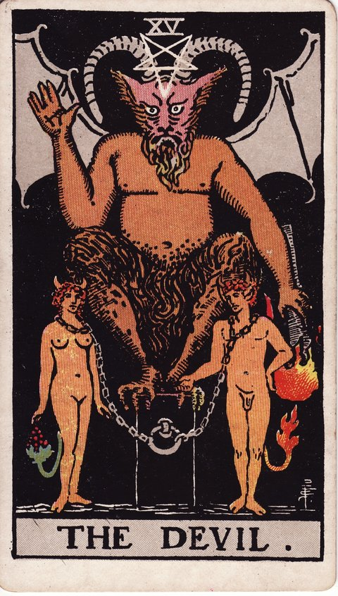

메이저 아르카나 · 타로 카드 백과사전
악마 (The Devil)

정방향
키워드: 끊기 힘든 집착 · 달콤한 유혹 · 숨겨진 속박 · 옭아매는 굴레 · 눈먼 탐닉 · 길들여진 안주
조언: 겉으로 매력적으로 보이는 것이 자유를 갉아먹고 있지 않은지 냉정하게 바라보세요.
연애운
솔로
강렬한 끌림에 이끌리지만 그 안에 건강하지 못한 의존이 숨어 있을 수 있습니다. 상대 없이도 스스로 온전한지 자문해보는 시간이 필요합니다.
커플
관계 속 집착이나 통제가 서로를 옭아매고 있지 않은지 돌아봐야 하는 시기입니다. 집착과 애정을 구분하는 시선이 건강한 관계를 지켜줍니다.
재물운
소비
물질적 욕심이나 충동구매의 유혹이 강해지는 시기이니 조심하세요. 충동적인 지출이 늘기 전에 스스로 제동을 걸어보세요.
투자
당장의 큰 수익에 대한 욕심이 위험한 투자로 이끌 수 있는 시기입니다. 큰 수익에 대한 욕심을 잠시 내려놓고 신중하게 접근하세요.
취업운
구직
당장의 조건에 눈이 멀어 맞지 않는 자리에 얽매일 수 있는 시기입니다. 연봉이나 조건 이면의 근무 환경도 꼼꼼히 알아보세요.
이직
일이나 조직에 얽매여 벗어나기 힘든 답답함을 느낄 수 있습니다. 답답함이 크다면 벗어날 방법을 조금씩 찾아보는 것이 좋습니다.
직장운
팀워크
팀 내 관계나 역할에 얽매여 답답함을 느낄 수 있는 시기입니다. 역할 재배치를 요청하는 것도 하나의 방법이 될 수 있습니다.
개인성과
익숙해진 지금 자리에 안주하며 새로운 시도를 미루고 있을 수 있는 시기입니다. 안주하려는 마음을 인정하고 새로운 시도를 계획해보세요.
사업운
창업준비
눈앞의 이익만 좇다가 무리한 사업 결정을 내릴 수 있는 시기입니다. 단기 성과보다 사업의 장기적인 그림을 먼저 그려보세요.
운영중
눈앞의 이익에 대한 집착이 사업 판단을 흐리게 할 수 있는 시기입니다. 눈앞의 이익에 흔들리지 말고 원칙을 지켜가세요.
학업운
시험준비
나쁜 습관이나 유혹에 흔들려 집중력이 떨어질 수 있는 시기입니다. 유혹에 흔들리지 않도록 스스로 환경을 관리해보세요.
진로고민
당장 편해 보이는 길에 대한 유혹에 흔들릴 수 있는 시기입니다. 당장 편한 길보다 진짜 원하는 방향을 다시 생각해보세요.
건강운
신체
나쁜 생활 습관이 몸에 부담을 주고 있을 수 있는 시기입니다. 나쁜 습관을 하나씩 줄여가는 노력이 몸을 가볍게 만들어줍니다.
정신
특정한 생각이나 감정에 지나치게 매여 있을 수 있는 시기입니다. 매여 있는 생각에서 조금씩 거리를 두는 연습이 필요합니다.
대인관계운
새로운 인연
건강하지 못한 의존이나 집착이 관계에 숨어 있을 수 있는 시기입니다. 상대 없이도 혼자 잘 지낼 수 있는지 스스로 점검해보세요.
기존 관계
가까운 사람들과의 사이에서 반복되는 지배적인 태도를 스스로 점검해봐야 하는 시기입니다. 반복되는 갈등의 원인을 이번 기회에 솔직하게 짚어보세요.
명예운
평판을 위해 무리하게 애쓰다 오히려 발목 잡힐 수 있는 시기입니다. 무리하게 애쓰기보다 자연스러운 모습을 보여주는 것이 안전합니다.
이사운
지금의 자리에 얽매여 필요한 이동을 망설이게 되는 시기입니다. 망설임에서 벗어나 필요한 이동을 조금씩 준비해보세요.
자식운
아이에 대한 과도한 집착을 돌아봐야 하는 시기입니다. 과도한 집착을 인정하고 조금씩 거리를 조절해보세요.
역방향
키워드: 벗어나려는 자각 · 속박에서의 해방 · 깨어나는 경계심 · 풀려나는 실마리 · 가벼워진 마음 · 다시 찾은 주도권
조언: 완전한 해방까지는 아니어도 무엇이 나를 얽매고 있었는지 자각해보세요.
연애운
솔로
건강하지 못한 관계 패턴에서 벗어날 준비가 조금씩 되어가는 시기입니다. 익숙했던 패턴에서 조금씩 벗어나려는 용기가 필요합니다.
커플
서로를 옭아매던 습관에서 벗어나려는 자각이 시작되는 시기입니다. 서로를 옭아매던 습관을 함께 인정하는 것부터 시작해보세요.
재물운
소비
낭비하던 습관에서 벗어나 재정을 다시 통제하기 시작하는 시기입니다. 한 달만이라도 지출 내역을 매일 기록해보면 통제력이 붙습니다.
투자
무리한 욕심에서 벗어나 투자를 재정비할 자각이 생기는 시기입니다. 무리한 욕심을 내려놓으면 투자도 더 안정적으로 관리할 수 있습니다.
취업운
구직
맞지 않는 조건에 안주하려던 마음에서 벗어날 자각이 시작되는 시기입니다. 안주하려던 마음을 인정하는 것이 변화의 첫걸음이 됩니다.
이직
나를 옭아매던 상황에서 벗어날 용기가 조금씩 생기는 시기입니다. 벗어날 용기가 생긴 만큼 구체적인 계획도 함께 세워보세요.
직장운
팀워크
팀 내 얽매인 관계에서 벗어나려는 자각이 시작되는 시기입니다. 불편했던 역할 분담부터 조심스럽게 다시 이야기해보세요.
개인성과
안주하려던 마음에서 벗어나 다시 도전할 용기가 생기는 시기입니다. 새로운 업무를 자원해서 맡아보는 것도 좋은 실천입니다.
사업운
창업준비
과했던 욕심을 내려놓고 나서야 사업 계획을 냉정하게 다시 볼 여유가 생기는 시기입니다. 초기 목표를 다시 검토하며 현실적인 규모로 조정해보세요.
운영중
이익에 대한 집착에서 벗어나 건강한 운영 방식을 되찾는 시기입니다. 단기 매출보다 고객과의 신뢰를 우선하는 방향으로 조정해보세요.
학업운
시험준비
미루던 습관에서 벗어나 다시 집중할 준비가 되는 시기입니다. 미루던 습관을 하나씩 끊어내는 것부터 시작해보세요.
진로고민
안일하게 안주하려던 마음에서 벗어나 다시 도전할 자각이 생기는 시기입니다. 안주하려던 마음을 인정하고 다시 도전할 준비를 해보세요.
건강운
신체
해로운 습관에서 벗어나려는 의지가 생기며 회복의 실마리가 보이는 시기입니다. 작은 실천이라도 꾸준히 이어가면 회복의 실마리가 보입니다.
정신
얽매여 있던 생각에서 조금씩 자유로워지는 시기입니다. 자유로워지려는 마음을 스스로 응원해주세요.
대인관계운
새로운 인연
건강하지 못한 관계 패턴을 알아채고 거리를 두려는 자각이 생기는 시기입니다. 불편함을 느꼈다면 그 감정을 무시하지 말고 존중해주세요.
기존 관계
가까운 사람과의 관계에서 반복되던 안 좋은 패턴을 알아차리기 시작하는 시기입니다. 알아차린 패턴을 상대에게도 솔직하게 이야기해보세요.
명예운
나쁜 평판이나 습관에서 벗어나려는 노력이 시작되는 시기입니다. 작은 실천 하나하나를 주변에서도 알아볼 수 있게 꾸준히 보여주세요.
이사운
얽매여 있던 자리에서 벗어날 용기가 조금씩 생기는 시기입니다. 오래 미뤄온 이사나 독립을 이제는 구체적으로 알아봐도 좋습니다.
자식운
지나친 집착에서 벗어나 건강한 거리를 찾아가는 시기입니다. 아이가 스스로 선택할 기회를 조금씩 늘려주세요.
같은 슈트: 바보 · 마법사 · 여사제 · 여황제 · 황제 · 교황 · 연인 · 전차 · 힘 · 은둔자 · 운명의 수레바퀴 · 정의 · 매달린 사람 · 죽음 · 절제 · 악마 · 탑 · 별 · 달 · 태양 · 심판 · 세계
홈에서 직접 카드 뽑아보기 ↗